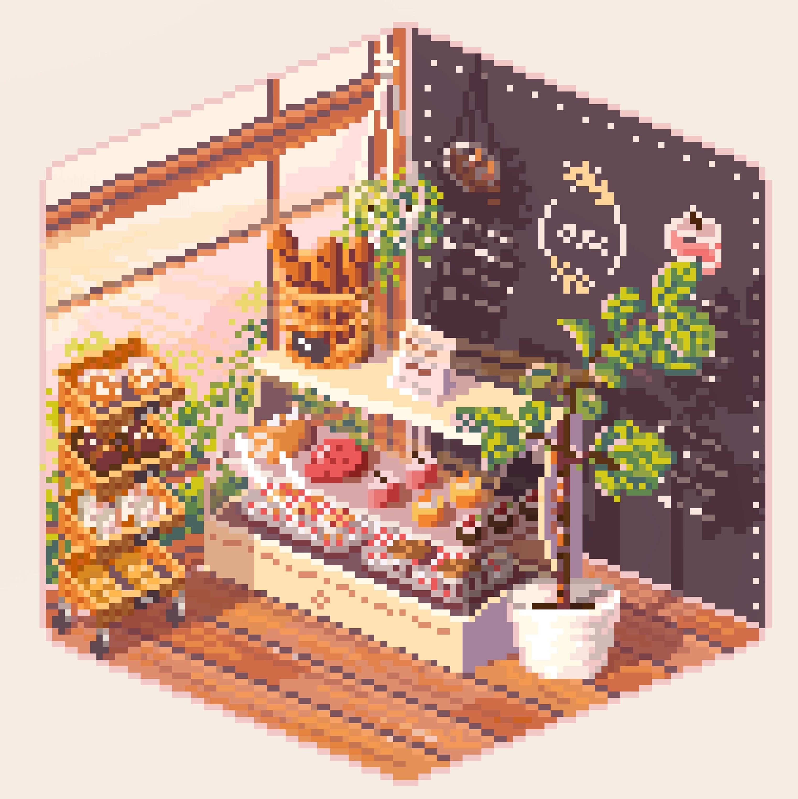

My Hobbies <3

A hobby I've had from early on in highschool was playing volleyball and while I haven't played in a while im hoping to get back into it.
I've also recently really gotten into baking and cooking, so far
my favourite thing I've made would probably be matcha white choc cookies
(not performative <\3).
And of course, like every other comp sci student I play games...
:D